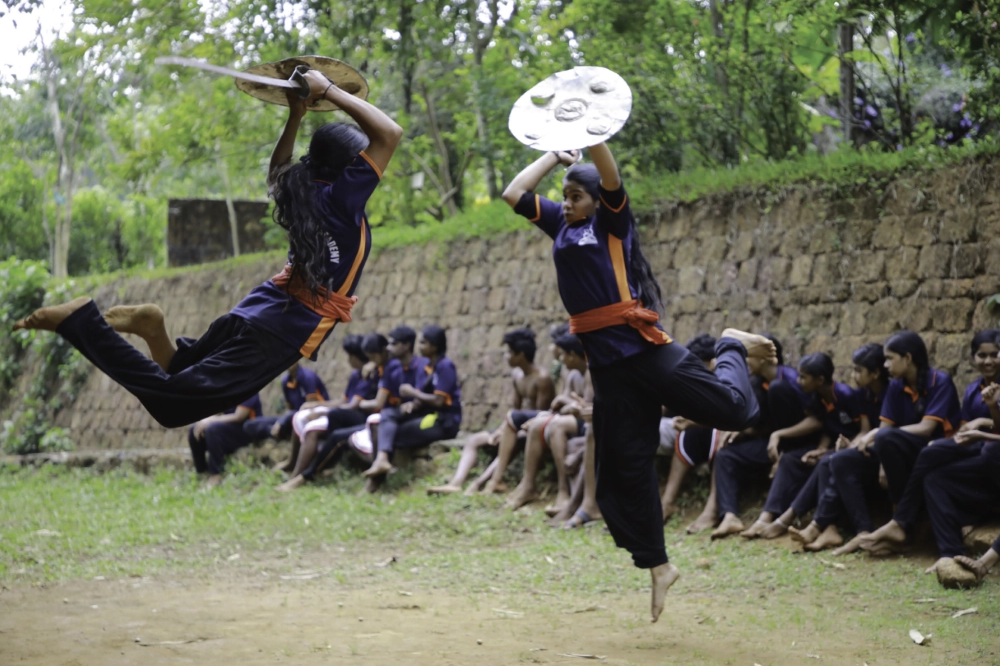
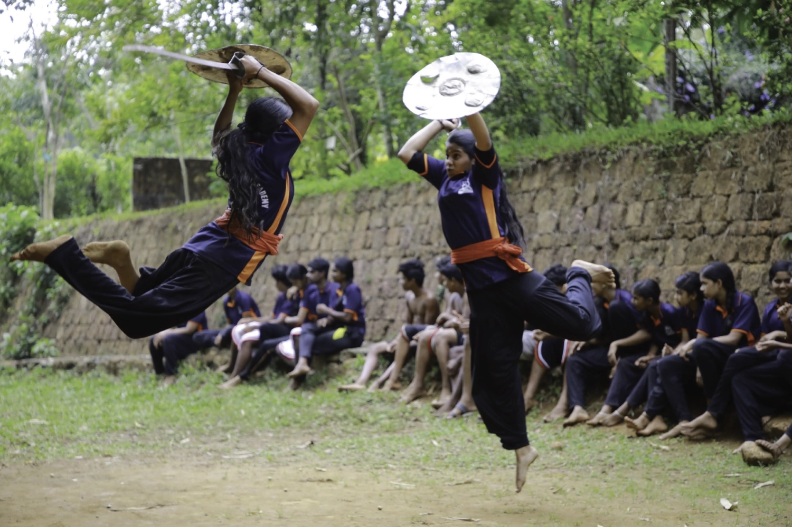
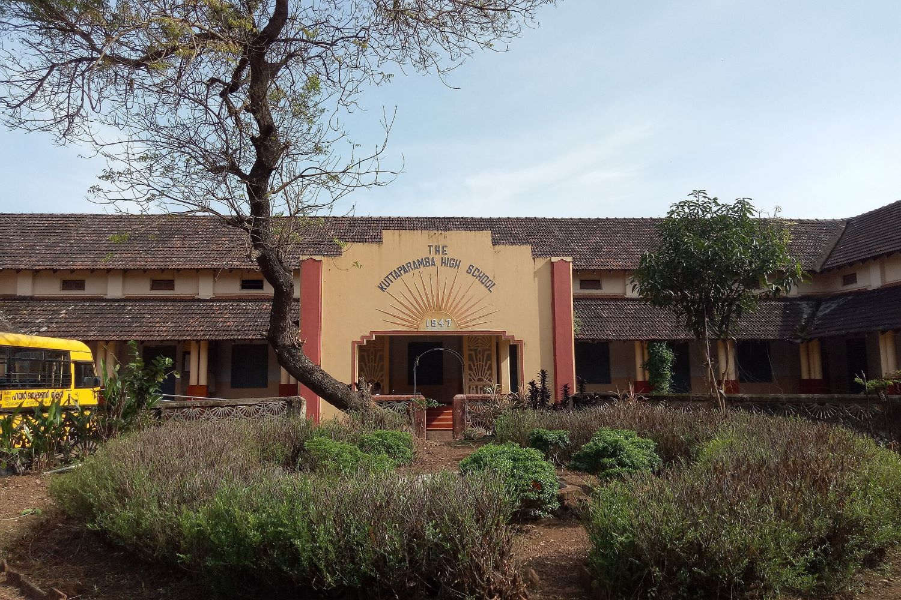
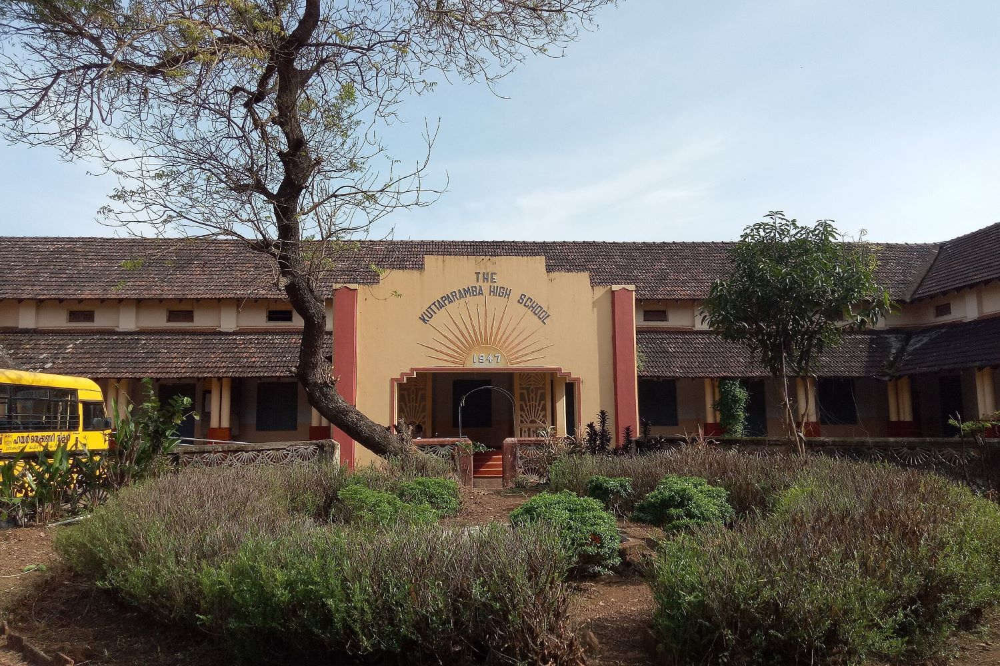

Bustling town & 50 shades of life
Take a walk in the neighbourhood leading to the bustling towns, travel to the villages nearby, board a local bus; catch a glimpse of the community pond where children and the youth dive deep cutting through the aquamarine water like pros. Feel the rains, an indispensable part of life here. Indulge your desire; treat yourself to an array of lip-smacking cakes, confectionaries…join the youths in sports for it’s the opium of the masses here.


River, beaches & drives
Converse and explore the nature around. With River Baveli that carries the spirit of the Western Ghats in the neighbourhood and beaches an hour’s drive, strike a conversation with the nature around and open up your heart to the beauty. Drive through and enter magical landscapes.
.webp)

Aralam Wildlife Sanctuary
A mere half hour drive from Saarang is Aralam Wildlife Sanctuary. Located on the western slopes of the Western Ghats, and adjoining forests of Brahmagiri Hills of Kodagu, Karnataka, Thirunelli Hills of Wayanad, and nourished by the River Cheenkanni, Aralam Wildlife Sanctuary is a rich and safe haven to a myriad variety of flora and fauna: 263 species of butterflies, 98 dragonflies and damselflies, 45 fishes, 41 amphibians, 63 reptiles, 241 birds, 54 mammals and 1,009 varieties of plants. Experience nature up close.


Theyyam & Kalaripayattu
Experience the rich and vibrant culture of the region where people live harmoniously and the secular fabric is strong. Witness the ritual art form Theyyam, predominantly performed in the north Malabar region of Kerala, especially Kannur. A visual splendour, wherein man adorns the guise of gods, goddesses and spirits of ancestors and pays obeisance to them through spirited dance, music and mime. Take a step, wield a sword and know Kalaripayattu, the traditional Indian martial art form, first hand.
 

Education
Kerala holds the best record for providing quality education to students across the nation, to this day. With Kerala continuing to be the most educated state in India, a number of schools adhering to various syllabi are located around Saarang
 

Medical care
With a buoyant daily life grounded in secular values, Kerala’s performance in both health and education continues to be par excellent in the country. Moreover, in a place such as Saarang where there is quality air, water and food, the diseases are kept at bay. However, Saarang is well connected to both health care centres and hospitals.